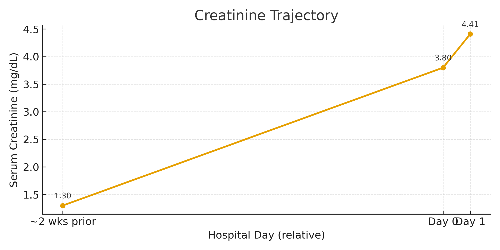
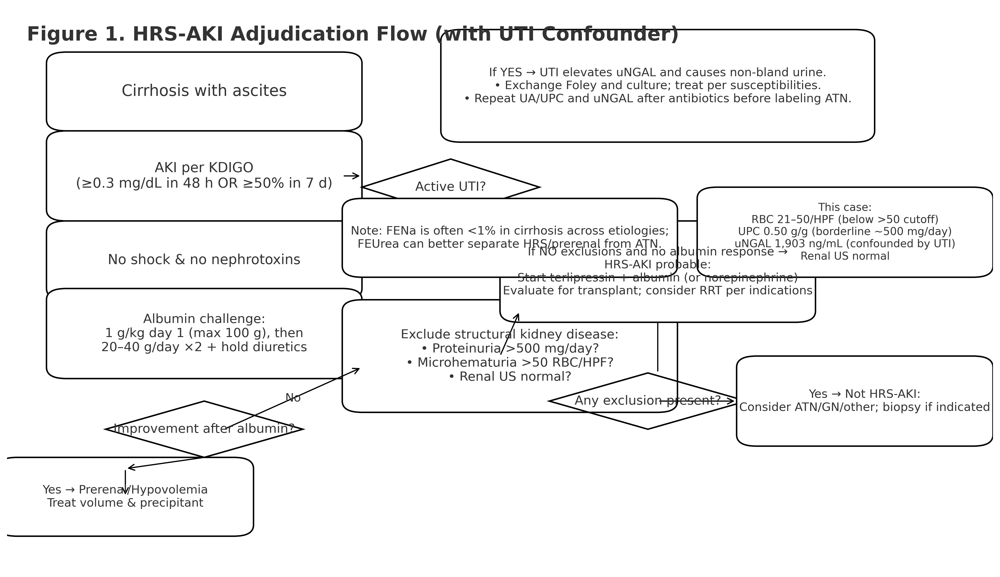
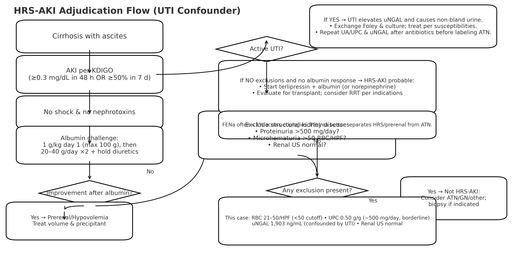
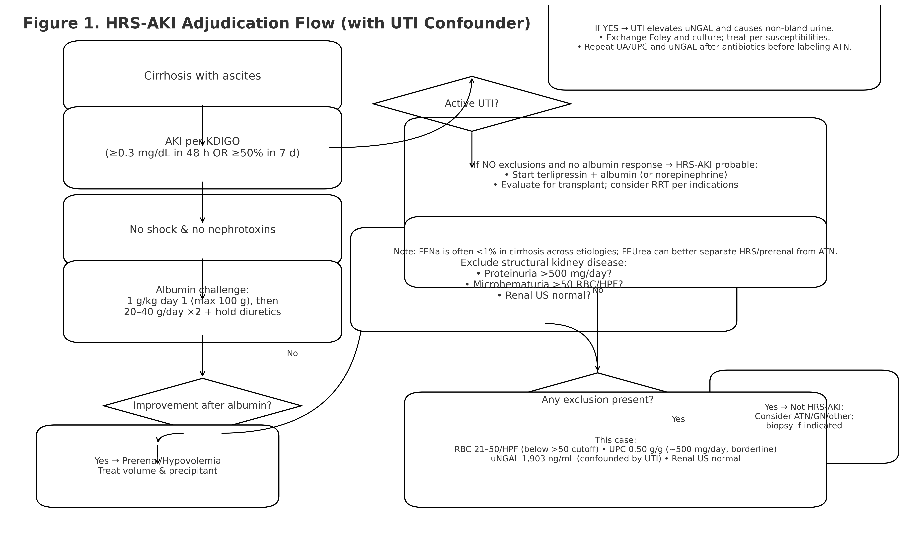

6 image(s)
creatinine-timeline.png · 125,842 bytes

hrs-aki-flow.png · 704,058 bytes

hrs-aki-flow-upload.png · 610,634 bytes

hrs-aki-flow-v2.png · 844,488 bytes

tls.png · 786,432 bytes
urine-cast.png · 786,432 bytes